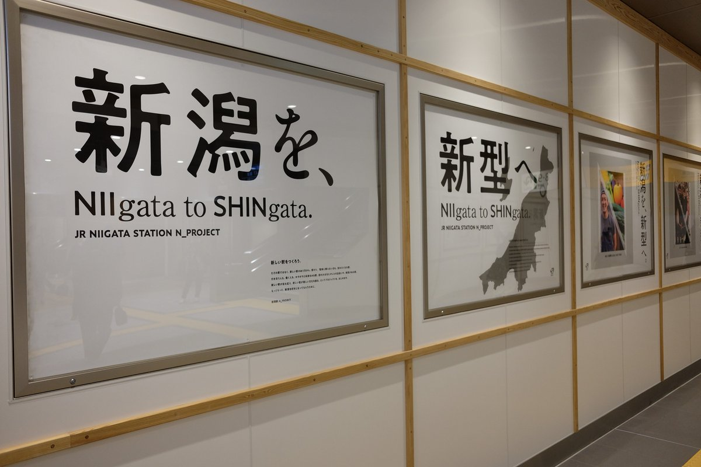

#ㅁㅊ! 3
니가타역（新潟駅）이 올해 4월 재래선 고가화（在来線高架化） 1차 공사로 환골탈태하였다. 여느 주요 역이 그렇듯, 공사 전까지는 신칸센 타는 곳은 고가 위에 설치되어 있는 반면에 재래선 홈은 지상에 위치하고 있었다. 그런데, 이번 재래선 고가화 공사로 재래선 홈이 신칸센 홈 바로 옆에 신설되어 재래선 5번 홈(특급 전용 승강장)에서 죠에츠신칸센（上越新幹線）으로의 평면 환승이 가능하게 된 것이다. 그런데, 니가타역 공사와 관련된 영상을 보던 중 굉장한 것을 발견했다. 이번 니가타역 대대적 공사의 캐치프레이즈가 바로
新潟を新型へ。
한국어로 번역하면 "니가타를 신형으로!" "니가타를 새롭게!"즈음으로 번역할 수 있을 것 같다.
그리고 필자는 개인적으로 니가타（新潟県新潟市）라는 도시에 깊은 애착을 가지고 있는데, 추후에 니가타에 대한 ‘지리이야기’도 올릴 예정이다! (사실 지리라고 하기보다는 거의 철도 이야기라, ‘지리이야기’ 코너를 ‘철도이야기’로 통폐합할까 고민 중이다.) 많은 기대 바란다.